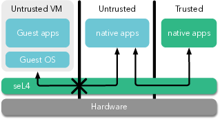

About seL4
seL4 is a high-assurance, high-performance operating system
microkernel. It is unique because of its comprehensive formal
verification, without compromising performance. It is meant to be used as a
trustworthy foundation for building safety- and security-critical
systems. It is available as open source on GitHub and supported by the
seL4 Foundation.
 Being a kernel means it is the piece
of software that runs at the heart of any software system and
controls all accesses to resources. It provides fine-grained
access control through capabilities,
and controls communication between components of the system.
It is the most critical part of the software system, and runs
in privileged mode.
Being a microkernel means that it is reduced to a minimal core
that is free from policy and therefore can form a dependable base
for building arbitrary systems serving many different usage
scenarios.
seL4 is a member of the L4 family of
microkernels, and is the world's most advanced, most
highly assured operating-system kernel.
seL4's formal verification sets it apart from any other operating
system. In a nutshell, it provides the highest assurance of
isolation between applications running in the system,
meaning that a compromise in one part of the system can be
contained and prevented from harming other, potentially more
critical parts of the system.
Specifically, seL4's implementation is formally (mathematically)
proven correct (bug-free) against its specification, has been
proved to enforce strong security properties, and if configured
correctly its operations have proven safe upper bounds on their
worst-case execution times. It was the world's first operating
system with such a proof, and is still the only proven operating
system featuring fine-grained capability-based security and high
performance. It also has the most advanced support for mixed
criticality real-time systems.
For detailed explanations of these terms, see our FAQ.
In 2009, the seL4 kernel was a scientific breakthrough result
from the Trustworthy Systems
group (TS) that showed that high-performance kernels are
within the realm of formal verification. Today, seL4 is part of
an ecosystem supporting active use in various domains including
automotive, aviation, infrastructure, medical, and defence. A key
highlight demonstrating its fit for real-world deployment was in
the DARPA-funded HACMS
program, where seL4 was used to protect an autonomous helicopter
against cyber-attacks. TS continues to push the state of the art
of operating systems through seL4, in close
cooperation with its partners in the seL4 Foundation.